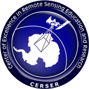

|
| Hagen Hodgkins |
| Home | Resume | Professional Statement | Research | Links |
| Elizabeth City State University http://www.ecsu.edu/ Home of the Mighty Vikings! Elizabeth City State University is a Historically Black College and University, located in Elizabeth City, North Carolina. |
|
| The Center for Remote Sensing of Ice Sheets https://www.cresis.ku.edu/ CReSIS is a Science and Technology Center established by the National Science Foundation (NSF) in 2005, with the mission of developing new technologies and computer models to measure and predict the response of sea level change to the mass balance of ice sheets in Greenland and Antarctica. |
|
|  | Center of Excellence in Remote Sensing Education and Research (CERSER) http://cerser.ecsu.edu/ The goal of CERSER is to develop and implement innovative and relevant research collaboration focused on ice sheet, coastal, ocean, and marine research. |
 |
National Science Foundation http://www.nsf.gov/ The National Science Foundation is an independent federal agency created by Congress in 1950 "to promote the progress of science; to advance the national health, prosperity, and welfare; to secure the national defense…" |
| phpMyAdmin http://www.phpmyadmin.net/home_page/index.php |
|
| Google Maps https://developers.google.com/maps/documentation/javascript/ |
| :: Center of Excellence in Remote Sensing Education and Research | ECSU | 1704 Weeksville Road | Elizabeth City, NC 27909 :: |